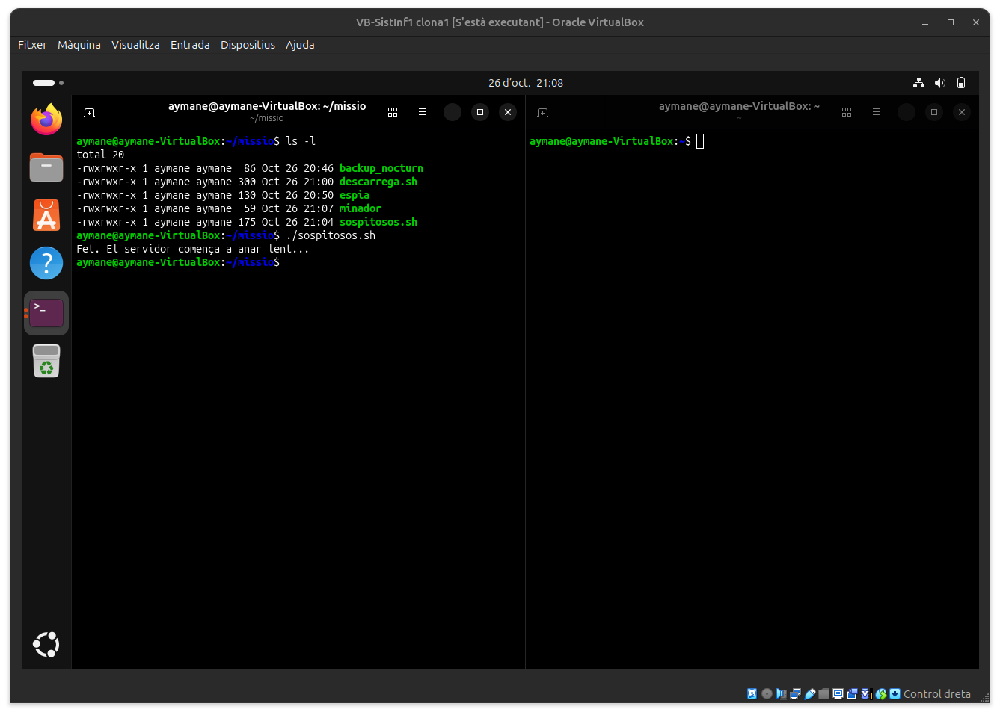
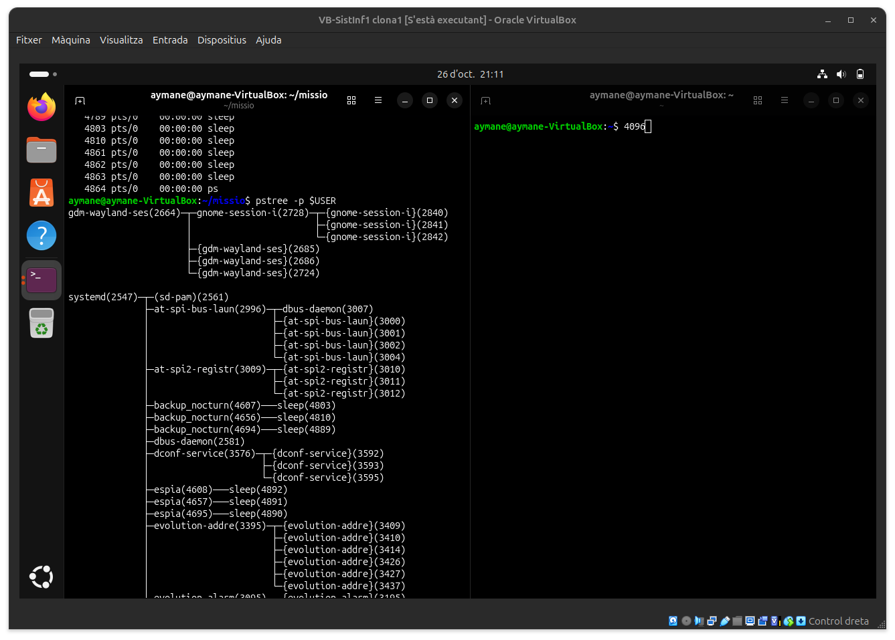
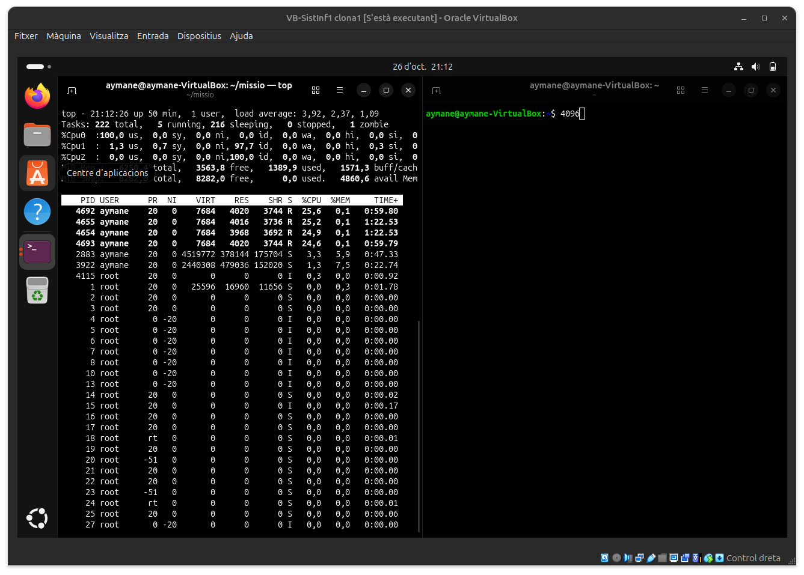
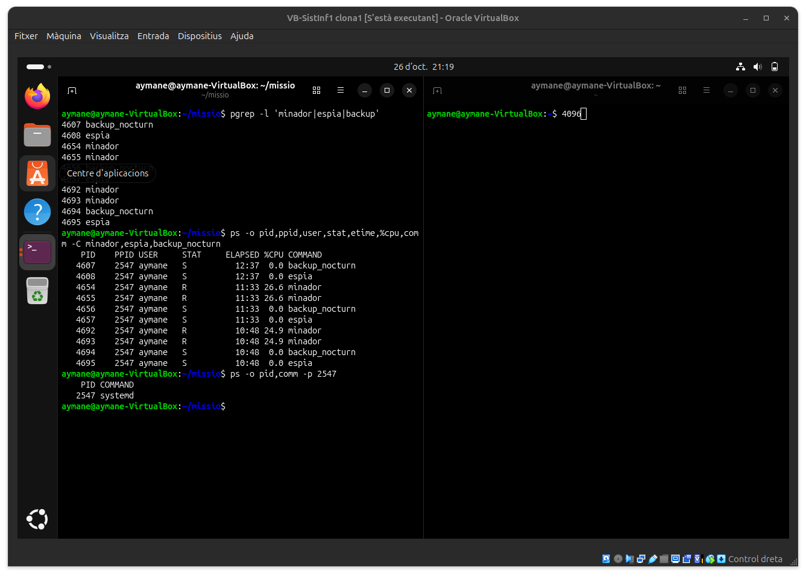
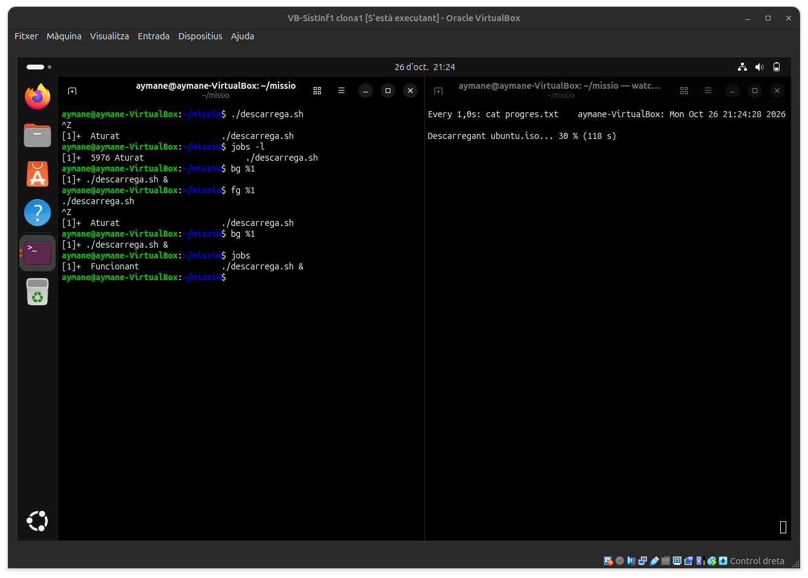
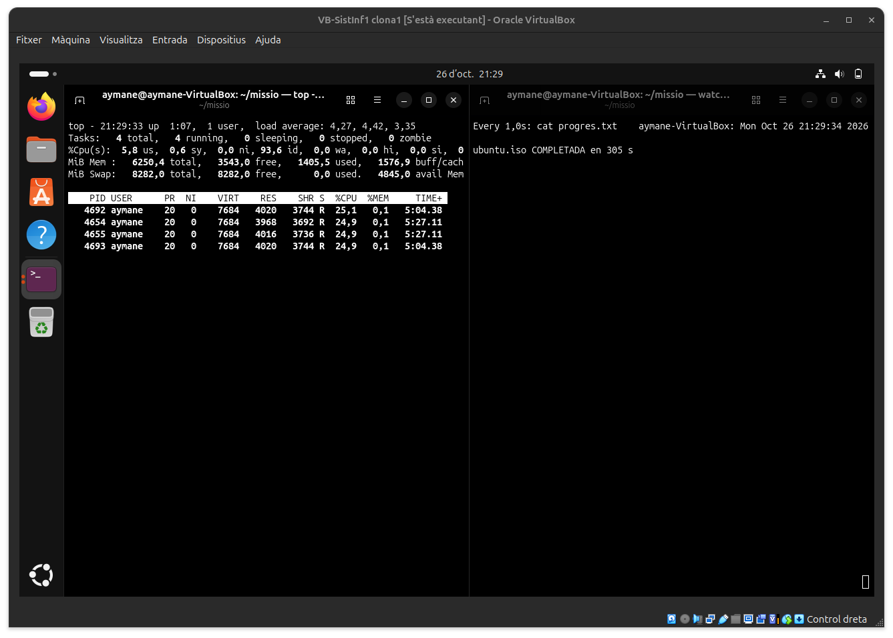
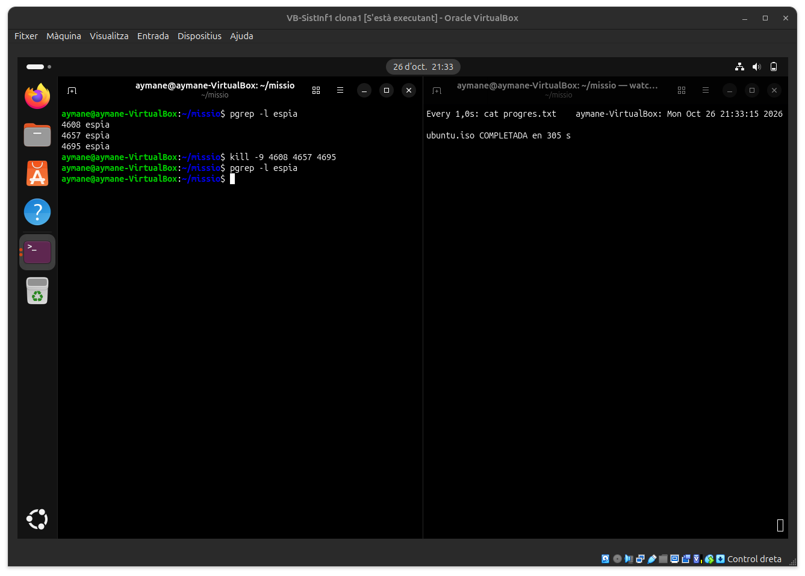
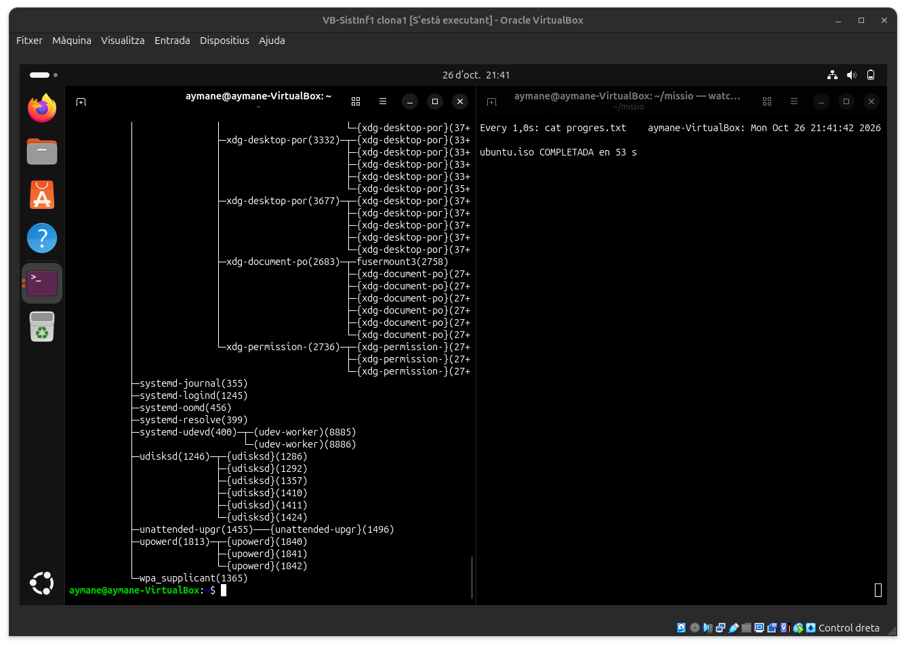

1. Gestió d'usuaris i grups
Pendent d'afegir el contingut d'aquest bloc.
Portada / Índex de sprints / Sprint 2
Índex d'apartats d'aquest sprint
| # | Apartat |
|---|---|
| 1 | Gestió d'usuaris i grups |
| 2 | Gestió de permisos |
| 3 | Gestió de processos |
| 4 | Sistemes de fitxers |
Pendent d'afegir el contingut d'aquest bloc.
Pendent d'afegir el contingut d'aquest bloc.
Nivell 0: Preparar el cas
Comprovació de la preparació de la carpeta de la missió, assignació de permisos d'execució als cinc scripts i llançament del sabotatge en segon pla.

Nivell 1: Reconeixement
Visualització dels processos del sistema i localització dels sospitosos penjant directament del procés principal systemd a l'arbre de processos.

Nivell 2: Qui consumeix més?
Monitorització en temps real amb top ordenada per ús de CPU, on es detecta que els dos processos minador encapçalen el consum del sistema.

Nivell 3: Interrogatori amb ps
Filtratge de la llista de processos per trobar els PID i la informació detallada dels tres sospitosos mitjançant pgrep i l'ordre ps personalitzada.

Nivell 4: Descarrega en segon pla
Control de l'execució del procés descarrega.sh alternant entre la congelació en primer pla i la continuació en segon pla comprovant-ho en dos terminals.

Nivell 5: Prioritat a la descarrega
Assignació de major prioritat a la descàrrega urgent amb sudo renice -n -10, aconseguint que obtingui més del 80% del temps de CPU.

Nivell 6: Neutralitzar
Neutralització dels minadors i l'espia mitjançant els senyals SIGTERM i SIGKILL (kill -9), així com la comprovació de pauses i reprès del procés de backup.

Nivell 7: Que no es perdi
Execució persistent de la descàrrega amb nohup en segon pla, assegurant que continuï fins a completar-se tot i tancar la finestra del terminal.

Pendent d'afegir el contingut d'aquest bloc.